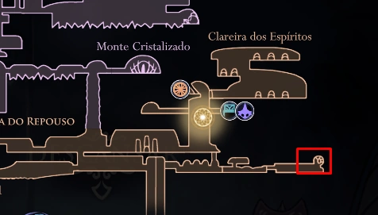

O Amuleto Devorador de Almas faz com que a Alma recebida ao atacar um inimigo aumente consideravelmente quando comparado ao normal.

Devorador de Almas
À direita do baú neste exato local demonstrado no mapa, há uma parede
quebrável. Você deverá seguir o seu caminho e mais um pouco pra frente
haverá um teto quebrável. Quebre o teto e o amuleto estará ali.
